Julretsu
ユーザー マニュアル
間違いが高くつく前に見つけるスプレッドシート。
バージョン 1.2.0
Circuitspecter Studio
Copyright (c) 2026 Matthew Menchinton & Circuitspecter Studio
Circuitspecter Studio
Copyright (c) 2026 Matthew Menchinton & Circuitspecter Studio
Julretsu は Windows、macOS、Linux 用のデスクトップ スプレッドシートです。使い慣れたスプレッドシートと同じように動きます。セルのグリッド、入力するたびに再計算される数式、書式、並べ替え、グラフ、印刷がそろっています。ブックはお使いのコンピューターの中だけに保存されます。
Julretsu ならではの特長はセーフティ ネットです。金額の打ち間違い、行が抜けた合計、1 行ずれた貼り付けといったスプレッドシートのミスは、毎年多くの企業に実際の損失をもたらしています。Julretsu は編集した時点でそれを見つけ、大きな変更は確定する前に見せ、すべての変更をブックの中に記録します。
SUM、AVERAGE、IF などの数式を使い、ワークシート同士を参照できます。.xlsx ブックを開いて保存できます。Julretsu の Web サイトからお使いのコンピューター用のインストーラーをダウンロードしてください。Julretsu 1.2.0 には次のパッケージがあります。
| コンピューター | ファイル | 動作条件 |
|---|---|---|
| Windows | Julretsu-1.2.0-Windows-Setup.exe | Windows 10 または 11 (64 ビット)、OpenGL 3.3 に対応したグラフィックス |
| Mac | Julretsu-1.2.0-macOS.dmg | macOS 13.3 Ventura 以降、Apple シリコンまたは Intel |
| Linux (Ubuntu、Debian、Mint) | Julretsu-1.2.0-linux-amd64.deb | 64 ビットの Intel または AMD、X11 か XWayland のデスクトップ |
| Linux (すべてのディストリビューション) | Julretsu-1.2.0-linux-x86_64.tar.gz | 上と同じ。インストール不要です |
.julretsu のブックをダブルクリックしたときに Julretsu で開くかどうかを指定できます。

Ubuntu、Debian、Linux Mint など: .deb ファイルをダブルクリックしてソフトウェア センターからインストールするか、ダウンロードしたフォルダーで次のコマンドを実行します。
sudo apt install ./Julretsu-1.2.0-linux-amd64.deb
インストールすると、アプリケーション メニューに Julretsu が表示され、.julretsu ファイルが Julretsu で開きます。
その他のディストリビューション: .tar.gz ファイルを好きな場所に展開し、展開したフォルダー内の bin/julretsu を実行します。
sudo apt install zenity)。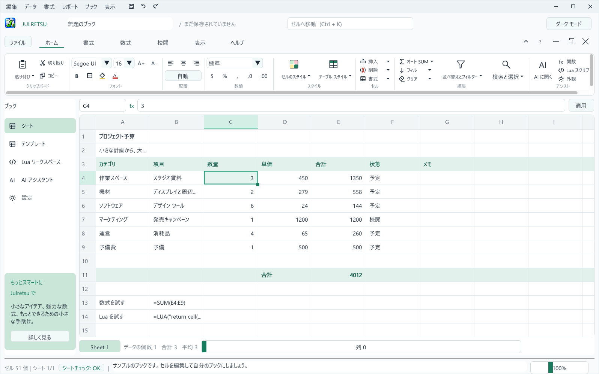
1 2 3 4 5 6 7 8 9 10 11 12 13| # | 各部 | はたらき |
|---|---|---|
| 1 | メニュー | 編集、データ、書式、レポート、ブック、表示の各メニューにすべてのコマンドがあります。 |
| 2 | クイック アクセス | 保存、元に戻す、やり直しをいつでもワンクリックで実行できます。 |
| 3 | ウィンドウ ボタン | Julretsu を最小化、最大化、終了します。上部 2 行の空いている場所をドラッグするとウィンドウを移動できます。 |
| 4 | ブック名 | 編集中のファイルと、未保存の変更があるかどうかを表示します。 |
| 5 | セルへ移動 | C4 のような番地を入力して Enter を押すと、そのセルへ移動します (Ctrl+K)。 |
| 6 | ファイルとリボンのタブ | ファイルはファイル メニューを開きます。タブでリボンを切り替えます: ホーム、書式、数式、校閲、表示、ヘルプ。 |
| 7 | ブックのボタン | リボンの折りたたみ、ヘルプの表示、ブックの最小化、元に戻す、閉じる。 |
| 8 | リボン | 選んだタブでよく使うコマンドを、ほかのオフィス ソフトと同じようにグループにまとめています。 |
| 9 | 数式バー | 選択したセルの番地と実際の内容を表示します。ここで編集して Enter を押すか 適用 をクリックします。 |
| 10 | ナビゲーション | シート、テンプレート、Lua ワークスペース、AI アシスタント、設定。 |
| 11 | グリッド | セルの領域です。アクティブ セルには緑の枠と、角に小さなフィル ハンドルが付きます。 |
| 12 | シート ボタンと集計 | ワークシートを切り替えます。隣には選択したセルの個数、合計、平均が表示されます。 |
| 13 | ステータス バー | 入力済みセルの数、シートチェック のバッジ、メッセージ、ズーム スライダー。 |
TRUE、FALSE、または = で始まる数式を入力します。= で始まる文字列や数値に見える文字列をそのまま保存するには、先頭にアポストロフィを付けます。たとえば '=hello や '00123 は入力したとおりに保持されます。長い文字列は自分のセル内だけに表示され、末尾が「...」になります。セルにマウスを合わせるか数式バーを見ると全体を確認できます。セルより広い数値は読み間違えないように ### と表示されます。ズームするか数式バーで確認してください。
Ctrl+Z で元に戻し、Ctrl+Y でやり直します。クイック アクセスのボタンでも操作できます。貼り付け、並べ替え、マクロは 1 回の操作で元に戻ります。
$ を付けた参照は固定されます。選択範囲の角にある小さな四角を下または右にドラッグします。数式は参照が調整された状態でコピーされます。5 と 10 のように数値 2 つから始めると、Julretsu が 15、20、25 と連続データを続けます。ホーム、編集、フィル から下方向や右方向にコピーすることもできます。
Ctrl+F を押すと、現在のシートの値と数式を検索します。次を検索 をクリックすると、一致するセルを順に確認できます。
数式は = で始まり、参照しているセルが変わると自動的に再計算されます。たとえばサンプルの予算では、E4 セルに =C4*D4、つまり数量 × 単価が入っています。
| 使えるもの | 例 |
|---|---|
| 数値、引用符で囲んだ文字列、TRUE と FALSE | =42、="Paid"、=TRUE |
| セル参照と範囲 | =B2、=SUM(B2:B9)、=SUM(A1:C3) |
| 四則演算 | + - * / とかっこ (例: =(B2+B3)*1.2) |
| 比較 | = <> < <= > >= (例: =B2>100) |
| 関数 | はたらき | 例 |
|---|---|---|
SUM | 数値を合計します。文字列と空のセルは無視されます。 | =SUM(E4:E9) |
AVERAGE | 範囲内の数値の平均です。 | =AVERAGE(D4:D9) |
IF | 2 つの結果から 1 つを選びます。条件、真のときの結果、偽のときの結果の 3 つが必ず必要です。 | =IF(E4>1000,"Review","OK") |
SHEET | 別のワークシートのセルを読みます。 | =SHEET("Budget","E11") |
LUA | 短い Lua の計算を実行します。 | =LUA("return cell('E11') * 1.05") |
列を合計する一番早い方法は、列を選んで ホーム、編集、オート SUM、合計 を選ぶことです。Julretsu が選択範囲のすぐ下に SUM の数式を入れます。
| 表示 | 意味 |
|---|---|
#DIV/0! | 0 で割ったか、数値のない範囲の平均を求めました。 |
#VALUE! | 数値が必要な場所に文字列が使われています。 |
#REF! | 参照がシートの外を指しています。 |
#NAME? | 関数名が不明です。 |
#CYCLE! | 数式が直接、またはほかのセルを通じて自分自身を参照しています。 |
#NUM! | 結果が大きすぎて表せません。 |
#PARSE! | 数式を読み取れませんでした。かっこと引用符を確認してください。 |
ホーム リボンには、ふだん使う書式のツールがそろっています。選択したセルに適用され、行番号をクリックして行全体を選んだ場合はその行に適用されます。
| グループ | ツール |
|---|---|
| クリップボード | 貼り付け (または値の貼り付け)、切り取り、コピー。 |
| フォント | フォント、サイズ、拡大と縮小、太字、罫線、塗りつぶしの色、フォントの色。 |
| 配置 | 左揃え、中央揃え、右揃え、または自動 (数値は右、文字列は左)。 |
| 数値 | 標準、数値、通貨、パーセンテージ、日付、桁区切りの表示形式と、小数点以下の桁数の増減。 |
| スタイル | 良い、悪い、どちらでもない、タイトル、見出し、合計、入力、メモなどの既定のセル スタイルと、見出し行と縞模様の行があるテーブル スタイル。 |
| セル | 行、列、ワークシートの挿入と削除、セルの書式設定を開きます。 |
| 編集 | オート SUM、フィル、クリア、並べ替えとフィルター、検索と選択。 |
細かく指定するには 書式、選択したセルの書式設定 (または セル、書式、セルの書式設定) を選びます。フォントの種類 (ゴシック体、明朝体、等幅)、サイズ、太字、罫線、配置、表示形式、小数点以下の桁数、文字色と塗りつぶしの色を設定できます。
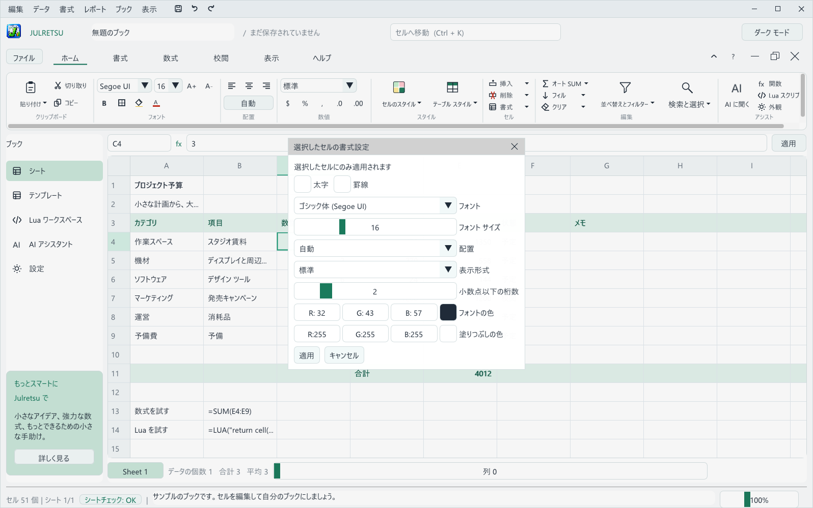
| 表示形式 | 1234.5 の表示 |
|---|---|
| 標準 | 1234.5 |
| 数値 (小数 2 桁) | 1234.50 |
| 通貨 | $1,234.50 |
| 桁区切り | 1,234.50 |
| パーセンテージ (0.25、小数 0 桁) | 25% |
| 日付 | Excel 形式の日付シリアル値を日付として表示します (例: 2026-09-20) |
書式 タブには行全体に使える手早いツールがあります。行を太字に、緑の塗りつぶし、小数点以下の増減、リセットです。見出し行や合計行に便利です。
見出し行を含めて表を選び、ホーム、スタイル、テーブル スタイル から色を選びます。Julretsu が見出しを太字にして色を付け、罫線を引き、1 行おきに色を敷きます。
セルを選んでから ホーム、セル、挿入 または 削除 を使います (データ メニューにもあります)。行は選択したセルの上に、列は左に挿入されます。ほかの場所の数式は、正しいセルを指したままになるように更新されます。
SHEET と LUA の参照は自動で調整できないため、挿入や削除の前に取り除くよう案内します。フィルターをかけたい列のセルをクリックし、データ、アクティブな列でフィルター を選んで探す文字を入力します。その文字を含む行だけが表示され (大文字と小文字は区別されます)、1 行目は見出しとして常に表示されます。すべて表示に戻すには データ、フィルターを解除 を選びます。フィルターでデータが削除されることはありません。非表示の行を守るため、並べ替え、貼り付け、削除の前にはフィルターを解除してください。
表示 メニューで 先頭行の固定、先頭列の固定、またはその両方を選ぶと、スクロールしても見出しが表示されたままになります。
構造化テーブルはひとまとまりのデータを束ねて、表が正しく伸びるようにします。見出し行と 1 行以上のデータ行を選び、データ、構造化テーブル を選んで名前を入力し、選択範囲からテーブルを作成 をクリックします。集計行を追加 にチェックを入れると、数値の列ごとに Julretsu が合計を作成して管理します。
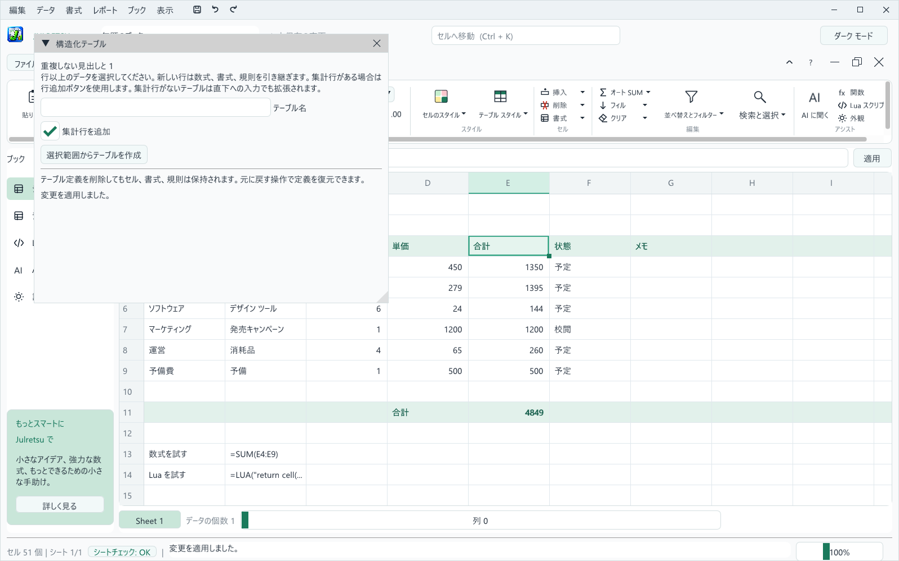
1 つのブックにワークシートを最大 64 枚まで入れられます。グリッド左下のシート ボタンでシートを切り替え、ブック、シートの管理 で追加、複製、名前の変更、並べ替え、削除ができます。
別のシートの値を使うには、SHEET にシート名とセル番地を引用符付きで指定します (例: =SHEET("Q1 Sales","B12"))。シート名を変更したら、数式の中の名前も更新してください。
Ctrl+S、クイック アクセスの保存ボタン、または ファイル、保存 で保存します。初回はフォルダーと名前を指定します。別のコピーとして保存するには ファイル、名前を付けて保存 (Ctrl+Shift+S) を使います。ブックは Ctrl+O で開くか、.julretsu ファイルをダブルクリックして開きます。
.julretsu ファイルには、値、数式、書式、すべてのワークシート、Lua スクリプト、変更履歴がすべて保存されます。未保存の変更があるブックを閉じたり置き換えたりするときは、Julretsu が必ず確認します。

未保存の作業が 1 分続くと、Julretsu は静かに回復用のコピーを作り、1 分ごとに更新します。Julretsu やコンピューターが不意に終了した場合、次回起動時にそのコピーを復元するか尋ねます。復元 を選び、名前を付けて保存 でブックを保存してください。通常どおり保存または終了すると、回復用のコピーは削除されます。ブック メニューからオフにしたり、手動で開いたりもできます。
復元ポイントは、あとで戻れるブック全体のスナップショットです。編集、復元ポイント、または 校閲 タブの 復元ポイント ボタンを使います。先にブックを保存し、名前を入力して 復元ポイントを作成 をクリックします。
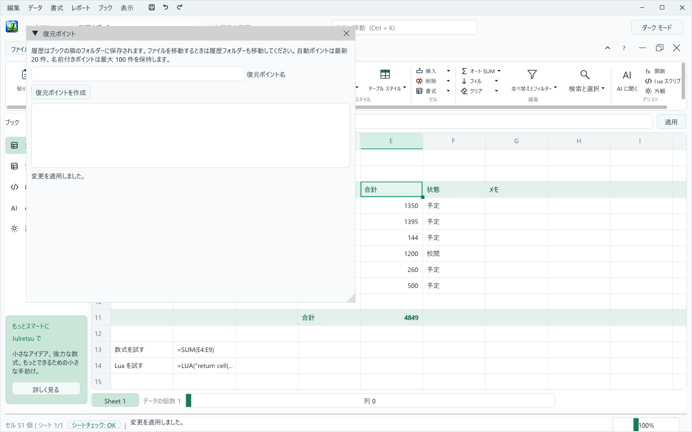
保存するたびに Julretsu は 保存前 の復元ポイントも作るので、うまくいかなかった編集だけが残ることはありません。
ファイル、CSV のインポート と ファイル、CSV のエクスポート を使います。Julretsu は UTF-8 の CSV ファイルを読み書きし、カンマ、引用符、複数行を含む値にも対応します。インポート時は数値と TRUE、FALSE が認識され、それ以外は文字列になります。CSV ファイル内の数式が実行されることはありません。
エクスポートした CSV ファイルには計算結果が入ります。=、+、-、@ で始まる文字列は先頭にアポストロフィを付けて保護するため、ほかのスプレッドシート ソフトが数式として実行することはありません。
ファイル、Excel のインポート は .xlsx ファイルのすべてのワークシートを、セルごとの書式と対応する入力規則とともに読み込みます。Excel が最後に計算した結果を取り込むには 保存された値 を、四則演算、比較、SUM、AVERAGE、IF を数式のまま残すには 対応する数式 を選びます。別のシートへの参照は SHEET の数式として入ります。読み込む前に、シートごとに何が取り込まれ、何が取り込まれないかを Julretsu が正確に表示します。
ファイル、Excel のエクスポート は、ブック全体を .xlsx ファイルとして保存します。すべてのワークシート、対応する数式、セルの書式、そして Excel が扱えるドロップダウン、数値、日付の規則が含まれます。Excel で表せない数式は計算結果の値として書き出され、その件数をメッセージで知らせます。
.julretsu のコピーを残してください。Julretsu は、高くつくスプレッドシートのミスの裏にある日常的な間違いに目を配ります。作業を止めることはありません。どこがおかしく見えるかを説明し、判断はあなたに任せます。
大きな貼り付け、フィル、クリア、マクロのあと、データの入っていた行や列を削除したあと、隣の列を残したまま並べ替えたあと、または数式が上書きされたとき、Julretsu は この変更を確認 を表示します。変更はすでにシートに反映されており、ダイアログには影響を受けたセルが変更前と変更後の値とともに並びます。
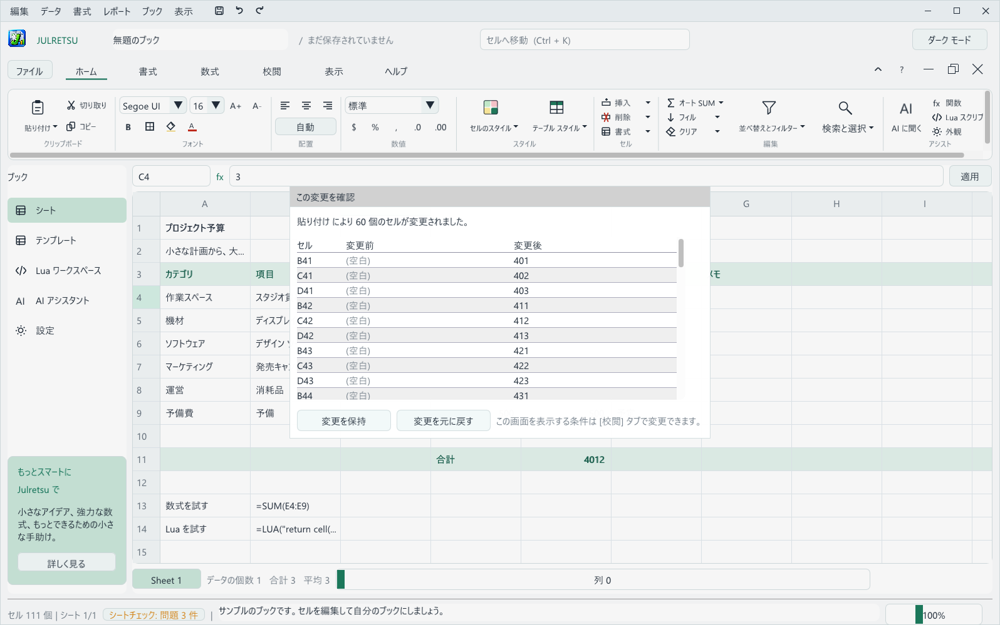
校閲 タブでは、何個のセルが変わったら確認するかを決めたり、確認をオフにしたりできます。一部だけの並べ替え、削除されたデータ、置き換えられた数式、桁違いの数値は常に確認します。
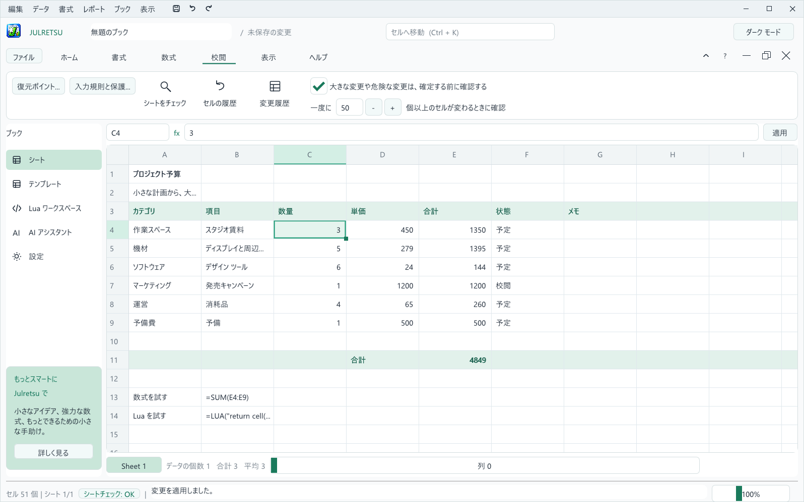
同じ列のほかの値よりはるかに大きい、または小さい数値を入力すると (たとえば 450 前後の金額が並ぶ列に 4500000)、ステータス バーがすぐに知らせます。入力ミスなら Ctrl+Z を押してください。
ステータス バーの シートチェック バッジは、シートに問題があるかどうかを常に表示します。バッジをクリックするか 校閲、シートをチェック を選ぶとパネルが開きます。Julretsu は次のものを探します:
SUM や AVERAGE の範囲それぞれの問題には 移動、安全な修正がある場合のワンクリック修正、無視 があります。赤い点は、誤った結果になりやすい問題です。修正はすべて元に戻せます。
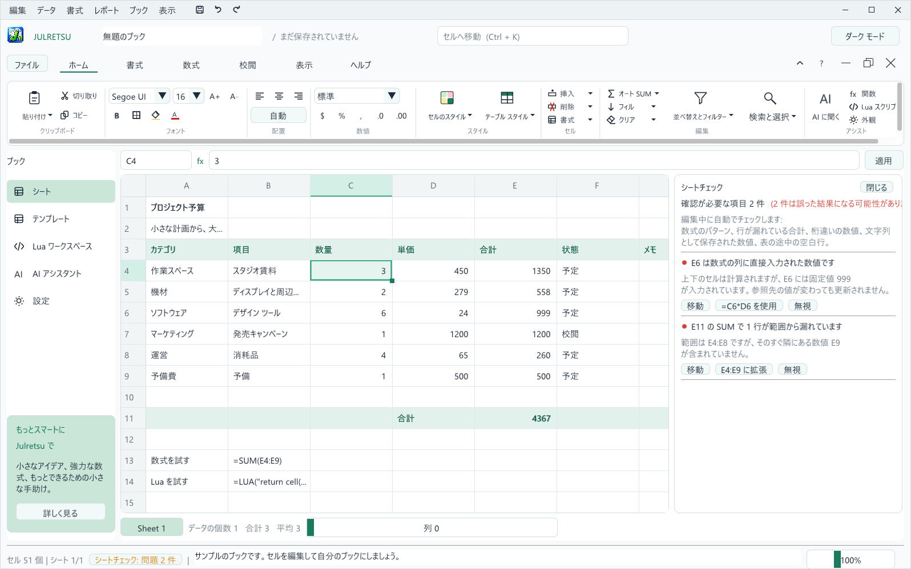
セルを右クリックして セルの履歴 を選ぶか、校閲、セルの履歴 を使うと、そのセルのすべての変更を確認できます。いつ、何によって変わったのか、変更前と変更後の値が表示されます。校閲、変更履歴 はシート上のすべての変更を一覧にします。
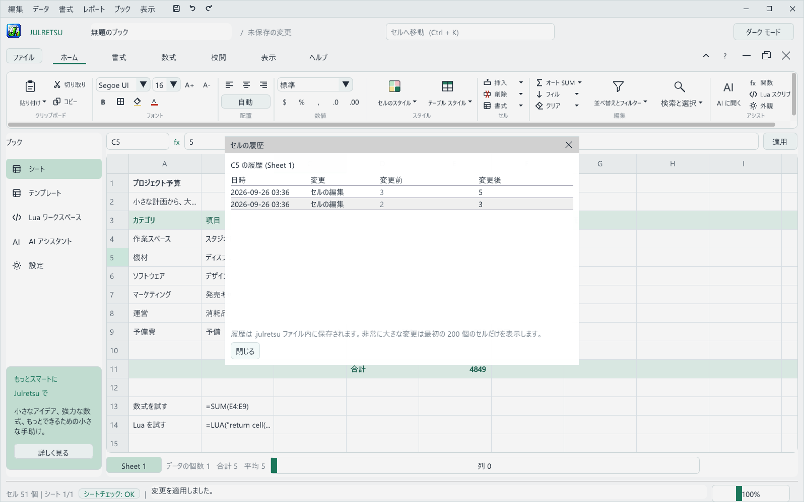
履歴は .julretsu ファイルの中に保存されるので、ブックと一緒に移動します。Julretsu は直近 1,000 件の変更を保持し、非常に大きな変更は最初の 200 個のセルだけを表示します。ファイルを共有するときに履歴を含めたくない場合は、変更履歴を開いて 履歴を消去 を選んでください。
入力規則は、セルに入れてよい値を決めておき、誤った値を入力した時点で拒否します。範囲を選んでから データ、入力規則と保護、または 校閲 タブのボタンを使います。
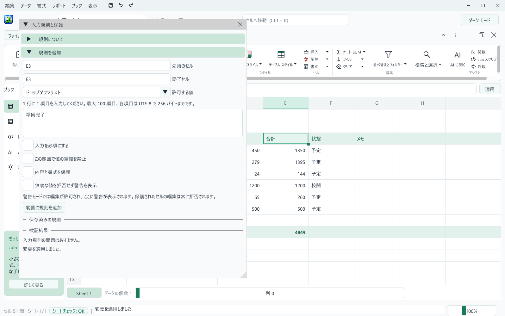
| 許可する値 | 受け付ける値 |
|---|---|
| すべての値 | 何でも受け付けます。入力を必須にする設定や保護と組み合わせると便利です。 |
| 数値、整数 | 最小値と最大値の間の値 (両端を含む)。 |
| 日付 | YYYY-MM-DD 形式で書いた 2 つの日付の間の日付。 |
| ドロップダウン リスト | 1 行に 1 つずつ入力した選択肢のいずれか。最大 100 項目まで指定できます。 |
規則は入力だけでなくすべての操作に適用されます。規則に反する貼り付け、フィル、並べ替え、マクロ、AI の提案は全体が拒否されるので、途中まで適用されることはありません。すでに問題のあるシートに規則を追加しても、データはそのままで問題の一覧が表示されます。一覧のセル番地をクリックすると、そのセルへ移動します。
.julretsu ファイルにのみ保存され、CSV や Excel への書き出しには含まれません。規則のあるブックは Julretsu 1.1.0 以前では開けません。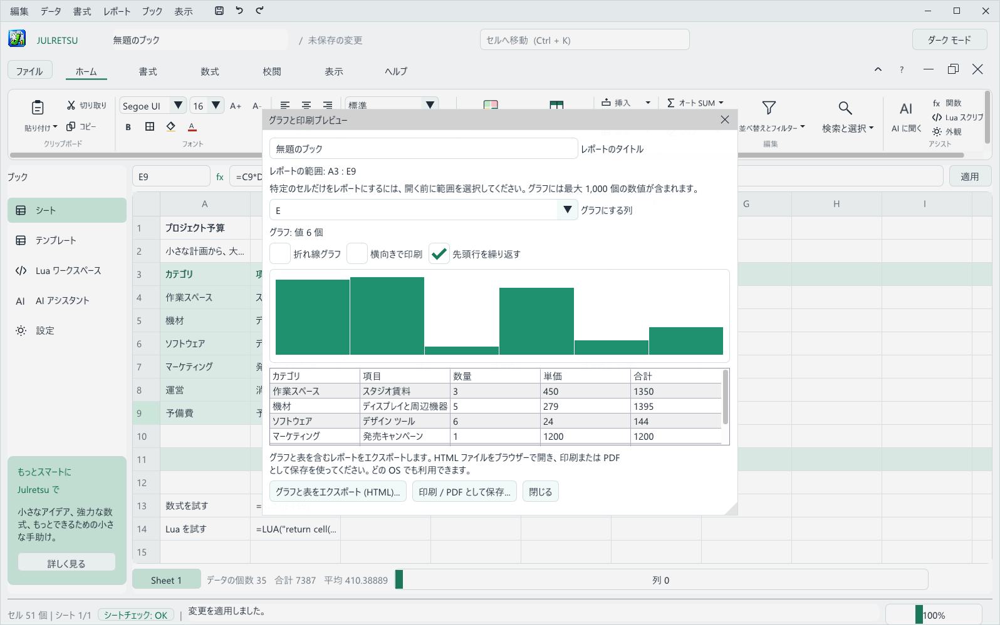
ナビゲーション バーの テンプレート をクリックすると、架空のサンプル データと動く数式が入ったブックを開けます。サンプル ブック の一覧から選び、選択したテンプレートを使う をクリックします。Julretsu は現在のブックを先に保存するか尋ねます。
| テンプレート | 内容 |
|---|---|
| プロジェクト予算 | カテゴリ別の予定費用と実際の費用、合計と差額。 |
| 月別売上 | 12 か月分のオンライン売上と店舗売上を目標と比較します。折れ線グラフ向きです。 |
| 家計の支出 | カテゴリ別の予定額と実際の支出、残額。 |
| 在庫計画 | 在庫数、発注点、単価、製品ごとの在庫金額。 |
| 週ごとのプロジェクト時間 | 12 週間のデザイン、開発、テストの時間と週ごとの合計。 |
テンプレートはグラフを手早く試すのに向いています。テンプレートを開いて表を選び、レポート、選択範囲のグラフ / 印刷 を選んでください。
Lua マクロは繰り返しの編集を自動化します。ナビゲーション バーの Lua ワークスペース、または ホーム、アシスト、Lua スクリプト から開きます。エディターにはスクリプトを書く コード タブと、マクロから呼び出せるものをまとめた クイックリファレンス タブがあります。コードの下にはカーソル位置が表示され、実行結果 に最後の実行内容が出ます。
cell('A1') は、マクロが始まる前のセルの値を読みます。set('A1', value) は変更を予約します。次の例は、予算のすべての数量に 1 を足します。
for row = 4, 9 do set('C' .. row, cell('C' .. row) + 1) end
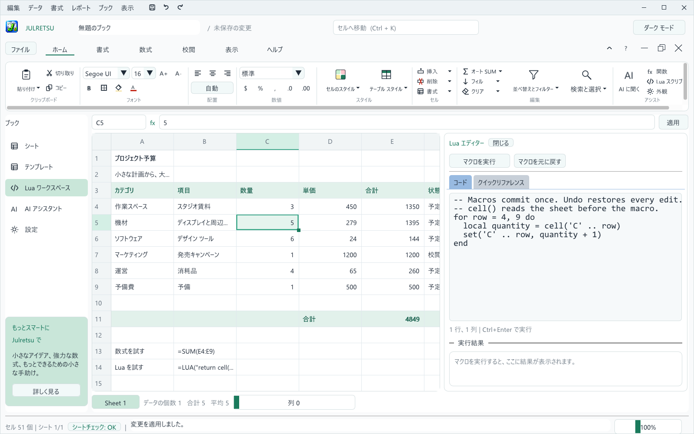
Julretsu はインターネットなしで完全に動作します。必要なら、ご自分の AI プロバイダーに接続し、「合計の下に 10% の予備費の行を追加して」のようにふだんの言葉で変更を依頼できます。
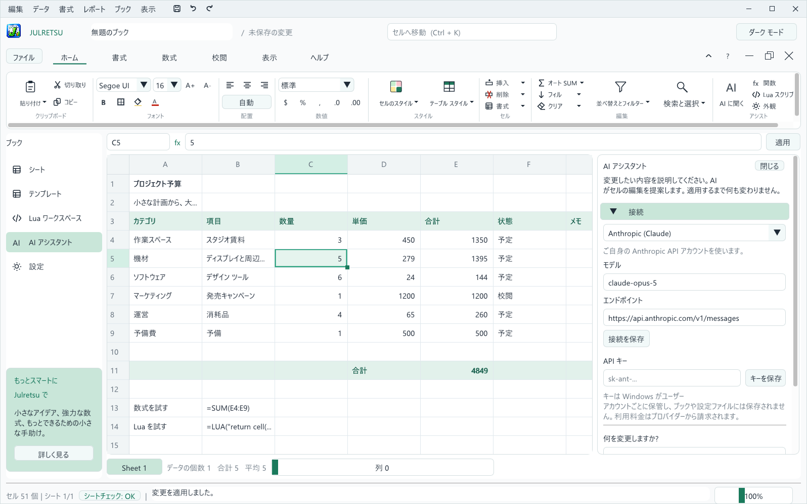
Julretsu は英語、韓国語、日本語に対応しています。初回起動時はコンピューターの言語に従います。変更するには、ナビゲーション バーの 設定 をクリックして 言語 から選ぶか、表示、言語 を使います。選んだ言語はこのデバイスに保存されます。

言語の設定は、メニュー、ボタン、メッセージ、シートチェック、エクスポートしたレポート、新しく作るサンプル ブックに適用されます。ご自分で入力したセルの内容や、すでに保存したブックが翻訳されることはありません。
どの言語設定でも、ふだんお使いの入力方式で韓国語と日本語をどのセルにも入力できます。Julretsu は必要な文字をコンピューターにインストールされたフォントから読み込むので、どのズーム倍率でも文字がくっきり表示されます。
sudo apt install fonts-noto-cjk)。Windows と macOS には最初から含まれています。右上の ダーク モード をクリックするか、表示、ダーク テーマ を使います。Julretsu は選択を記憶します。
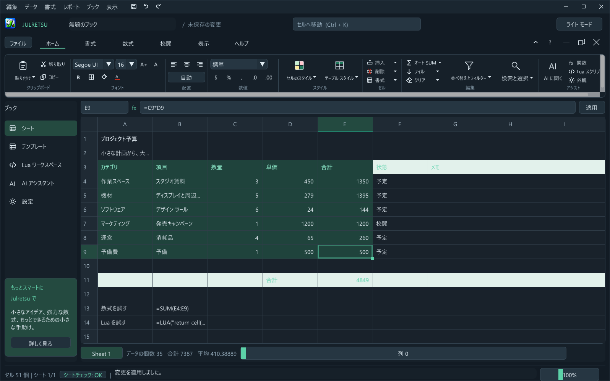
リボンのタブの右にあるボタンはブック自体を操作します。最小化 はウィンドウ下部の小さなバーに縮め、元に戻す は Julretsu の中で移動やサイズ変更ができるウィンドウにし、閉じる はブックを閉じて (先に保存するか尋ねます) 空のブックを開きます。
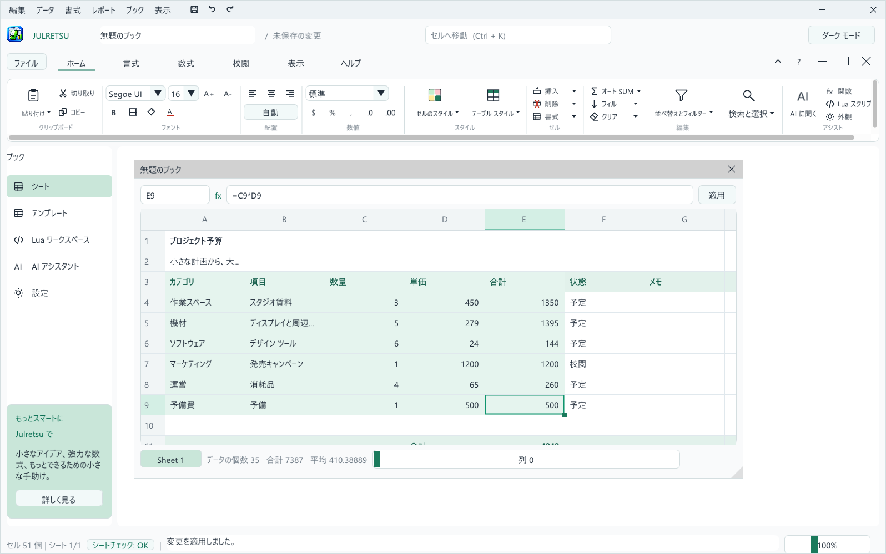
Mac では、この表の Ctrl を Cmd に読み替えてください。
| 操作 | キー |
|---|---|
| 新規作成、開く、保存、名前を付けて保存 | Ctrl+N、Ctrl+O、Ctrl+S、Ctrl+Shift+S |
| 元に戻す、やり直し | Ctrl+Z、Ctrl+Y |
| コピー、切り取り、貼り付け、値の貼り付け | Ctrl+C、Ctrl+X、Ctrl+V、Ctrl+Shift+V |
| 選択したセルを編集 | F2 またはダブルクリック |
| 編集を確定またはキャンセル | Enter、Esc |
| 内容のクリア | Delete |
| アクティブ セルの移動 | 矢印キー、Tab、Page Up、Page Down |
| 先頭のセル、最後のセル | Ctrl+Home、Ctrl+End |
| セルへ移動 | Ctrl+K |
| 検索 | Ctrl+F |
| 範囲を選択 | Shift+クリック |
| 選択範囲に行を追加または解除 | 行番号を Ctrl+クリック |
| 行のスクロール、列のスクロール | マウス ホイール、Shift+マウス ホイール |
| 確認した変更を保持または取り消し | Enter、Esc |
| 症状 | 対処 |
|---|---|
| インストール時に Windows が「WindowsによってPCが保護されました」と表示する。 | 詳細情報 をクリックしてから 実行 をクリックします。第 2 章を参照してください。 |
| macOS が Julretsu を悪質なソフトウェアかどうか確認できないと表示する。 | アプリケーションの Julretsu を Control キーを押しながらクリックして 開く を選ぶか、プライバシーとセキュリティで このまま開く を使います。 |
| Linux で zenity や kdialog に関するメッセージが出る。 | どちらかをインストールします: sudo apt install zenity。Julretsu が開く / 保存のダイアログに使います。 |
| Julretsu が起動せず、OpenGL やグラフィックスのメッセージが出る。 | グラフィックス ドライバーを更新してください。Julretsu は Windows と Linux で OpenGL 3.3 を必要とします。 |
セルに ### と表示される。 | 数値がセルの幅より大きいためです。ズームするか、数式バーで確認してください。 |
| 数式にエラー コードが表示される。 | 第 5 章のエラー一覧を確認し、シートチェックのパネルも見てください。 |
| 並べ替え、貼り付け、削除ができない。 | 先に有効なフィルターを解除してください (データ、フィルターを解除)。 |
| 行の挿入が拒否される。 | 先に SHEET や LUA の参照を取り除いてください。これらは自動で調整できません。 |
| Julretsu を起動すると回復の確認が表示される。 | 前回 Julretsu が不意に終了しました。作業を取り戻すには 復元 を、コピーを破棄するには 現在のブックを保持 を選びます。 |
.julretsu ファイルをダブルクリックしても Julretsu が開かない。 | Windows ではインストーラーをもう一度実行し、.julretsu のブックを Julretsu で開く にチェックを入れます。Mac では ファイル、開く から開いてください。 |
sudo apt remove julretsu を実行します。アンインストールしてもブックは削除されません。外観の設定はユーザーの設定フォルダーに保存され、必要なら手動で削除できます。
Julretsu は Julretsu ソフトウェア ライセンスのもとで無料で使えます。個人、教育、業務の作業のためにインストールして使用でき、作成したブックはあなたのものです。Julretsu 自体は Matthew Menchinton と Circuitspecter Studio の所有物のままです。オープンソースではなく、販売、再配布、改変はできません。ライセンス全文はインストーラーに表示され、LICENSE ファイルとしても含まれています。
Julretsu には、それぞれのライセンスに従うサードパーティ コンポーネントが含まれており、THIRD_PARTY_NOTICES.md に記載しています: Dear ImGui、GLFW、Lua、sol2、stb、miniz、pugixml。
ご質問や許諾のご依頼は github.com/Deathbringer98 から所有者へご連絡ください。
Julretsu 1.2.0 ユーザー マニュアル. Copyright (c) 2026 Matthew Menchinton & Circuitspecter Studio. All rights reserved.